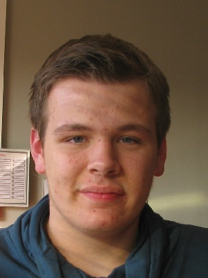

Mijn naam is Vincent van Dam. Ik ben 18 jaar en woon in Alblasserdam.
Ik volg de opleiding applicatieontwikkeling op het DaVinci College in Dordrecht.
In mijn vrije tijd doe ik fitness, kijk ik graag films en speel ik games. Ik werk als vakantiewerk in het magazijn van Base Logistics in Zwijndrecht.
augustes 2010 tot mei 2014: VMBO Kader in de richting administratie op De lage Waard in Papendrecht.
september 2014 tot juni 2016: MBO niveau 3 in de richting mederwerker ICT op het DaVinci College in Dordrecht.
september 2016 tot heden: MBO niveu 4 in de richting applicatieontwikkelaarop het DaVinci College in Dordrecht.
juni 2014 tot augustes 2014: Vakkenvuller bij de Bas van der Heijden in Alblasserdam
januari 2015 tot juli 2015: Krantijnwijk voor van der Meer verspreiding in Alblasserdam
Juli 2013 tot heden: Magazijnmedewerker bij Base Logistics in Zwijndrecht
Op dit moment heb ik nog niet veel kennis van het vakgebied applicatieontwikkelaar.
Met de opleiding die ik op dit moment volg hoop ik genoeg kennis op te doen om later een goede baan als applicatieontwikkelaar te hebben.